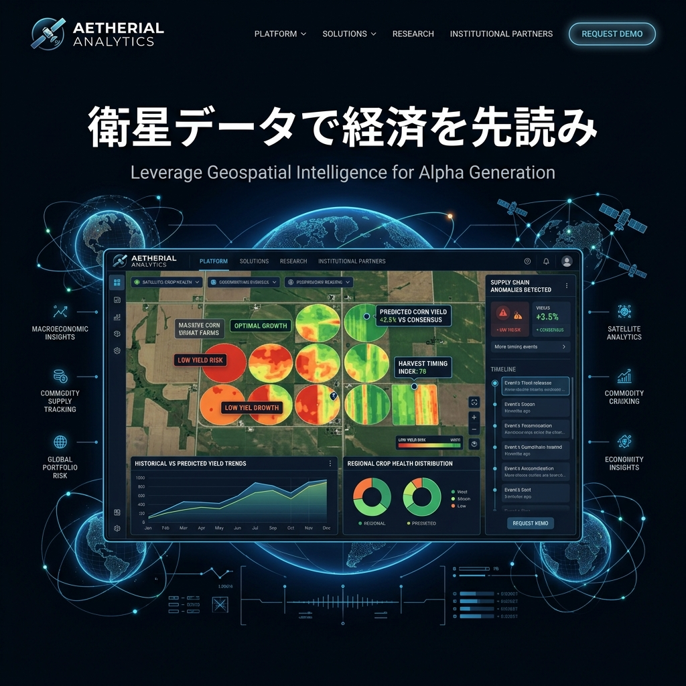

CONCEPT / fintech
宇宙から、地球の経済を先読みする。
ヘッジファンドや機関投資家向け。公式の統計発表を待っていては遅い。人工衛星の合成開口レーダーと赤外線データから、数週先のリアルな経済動向をAIが弾き出します。

農作物の収量予測
世界中のトウモロコシや小麦の生育状況をクロロフィル反射帯から解析し、先物価格を予測。
サプライチェーン監視
主要港湾のタンカーの喫水線（沈み込み）から積載量を測定し、グローバル物流のボトルネックを感知。
小売店駐車場トラッキング
全米のウォルマートの駐車場の車の台数をAIでカウントし、四半期決算の売上を先回り予測。